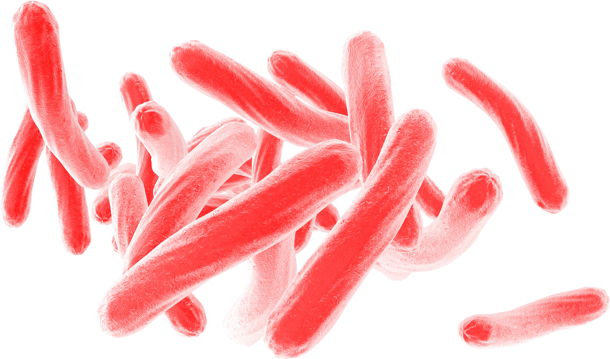
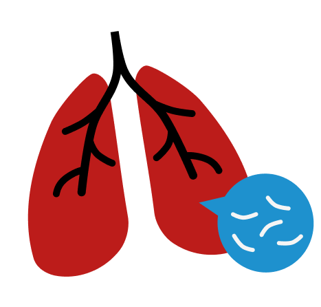

인류가 호모 사피엔스로 진화하기도 전인 300만 년 전부터입니다. 고대 이집트의 미라에서도 그 흔적이 발견되며 히브리어 성경 기록에서도 찾아볼 수 있을 정도로 오랜 역사를 지니고 있죠.
백신과 항생제가 수많은 이들의 목숨을 구했음에 불구하고 작년 이 질병으로 사망한 사람의 수는 말라리아, 장티푸스, 콜레라, 살인, 전쟁을 합친 것보다 많았습니다.
고대 중국에서는 파괴된 궁전인 '괴부'로, 고대 히브리어론 서서히 말라가는 몸이란 뜻의 '샤헤페트'로, 19세기 유럽에선 신체를 갉아먹는 '소모증'이라 이름지었죠.

이 질병에 대한 우리의 이해가 문화와 함께 어떻게 발전해 왔는지, 나아가 우리가 어떤 문제에 직면해 있는지 이야기합니다.